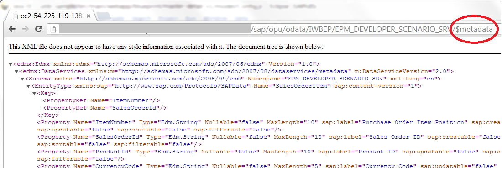
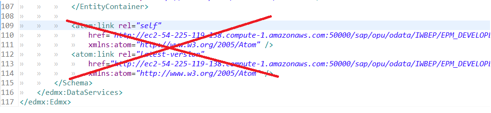
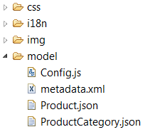

Mock Data
It is common to start development of an application with local mock data first. Application can be connected to the real data server at the later stage of development. Such mock data can be also useful for testing and problem solving in cases when access to the data service is not available or requires efforts to set up.
Switch to Mock Mode
Switching the application to mock mode is done by adding a URL parameter "responderOn" with the value "true".
In the application it is helpfull to provide the check of this URL parameter one time in a central place. We put this to the "model.Config" object that lies in the "model" folder.
jQuery.sap.declare("model.Config"); model.Config = {}; (function () { // The "reponder" URL parameter defines if the app shall run with mock data var responderOn = jQuery.sap.getUriParameters().get("responderOn"); // set the flag for later usage model.Config.isMock = ("true" === responderOn); } )();
Use the UI5 Mock Server
The most comfortable way to run your application with mock data is by using the sap.ui.app.MockServer. It intercepts the HTTP calls to the server and produces a faked output to the client. All this is transparent to your data binding and usage of oData model and feels like a real server.
Start Mock Server
You start the mock server when initializing your application:
sap.ui.app.Application.extend("Application", { init : function () { ... // start mock server if (model.Config.isMock) { jQuery.sap.require("sap.ui.app.MockServer"); var oMockServer = new sap.ui.app.MockServer({ rootUri: model.Config.getServiceUrl(); }); oMockServer.simulate("model/metadata.xml", "model/"); oMockServer.start(); }
Provide Mock Metadata
The mock server needs a metadata XML file describing the data structure of your service. You can easily obtain this by opening the oData service root URL in a browser with the suffix "$metadata" appended. Copy the resulting XML file into the model folder of your application.

Remove any kind of link that points internal servers. They are not need.

Provide Mock Data
You have two options to produce mock data:
- Template: You provide template JSON files for each entity that are used by the mock server to produce the output. Put all the templates into the model folder.
- Random: The mock server can produce random mock data. This makes it very easy for you but does not result in beatifull data matching your business scenario.
To avoid "not found" error messages of the mock server you should remove all entities and associations from the metadata for which you have not provided JSON template files.
